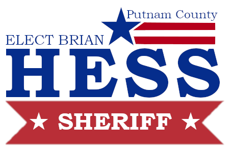

Integrity. Service. Community.
Integrity. Service. Community.
With a distinguished 25-year career in law enforcement, Brian M. Hess is a proven leader and innovator, ready to serve as Putnam County's next Sheriff. A lifelong conservative and devoted community member, Brian has risen through the ranks of the Westchester County Police Department to his current role as Lieutenant, where he founded and commands the Westchester-Putnam Real Time Crime Center. His work has revolutionized regional intelligence sharing, connecting over 65 law enforcement agencies and 5,500 professionals.
"My heart is here in Putnam County. My wife and I have lived in Patterson for over 20 years, raising our six children in this great community. I believe Putnam County deserves a Sheriff who combines boots-on-the-ground experience with a forward-thinking approach to modern policing. I am committed to strengthening our local law enforcement agencies, enhancing school safety, and ensuring every resident feels secure and protected."
Implementing proactive policing strategies to ensure the safety of all Putnam County residents while building trust between law enforcement and the community.
Strengthening partnerships with schools to provide education, mentorship, and positive role models for our youth.
Protecting Putnam County's rich history and cultural heritage while ensuring modern law enforcement practices.
Building stronger relationships between law enforcement and all segments of our diverse community through transparency and open communication.
Leveraging modern technology to improve response times, enhance investigations, and provide better service to the community.
Implementing data-driven approaches to reduce crime rates and improve overall public safety in Putnam County.
Brian Hess's innovative work with the Real Time Crime Center and multi-agency collaboration has been featured in major publications and has led to significant crime reduction across the region.
The Journal News
Westchester's Real Time Crime Center is catching suspects almost as quickly as they commit crimes, thanks to innovative technology implementation.
MOBOTIX
Lieutenant Brian Hess teamed up with local partners to establish the Real Time Crime Center, addressing crime across 40+ law enforcement agencies.
Zello
Westchester County improved response times by uniting disparate police departments with advanced communication technology.
Officer Magazine
Advanced license plate recognition and AI technology implementation benefits law enforcement operations.
News 12 Westchester
Westchester's innovative narcotics reduction program helps reduce overdoses through collaborative enforcement.
Yonkers Times
Westchester County sees significant crime reduction through innovative policing strategies and technology.
News 12 Westchester
Westchester County crime rates show significant decline thanks to coordinated law enforcement efforts.
CBS New York
Westchester County unveils comprehensive joint effort to tackle gun and gang violence through multi-agency collaboration.
Yonkers Times
Westchester Real Time Crime Center tip leads to quick recovery of stolen vehicle and arrest.
Patch
Real Time Crime Center assists in rapid apprehension of carjacking suspect in coordinated operation.
Patch
Quick response and technology coordination leads to rapid arrest of suspects in stolen vehicle case.
Patch
Coordinated multi-agency effort leads to apprehension of high-end car theft suspect across Westchester.

Professional headshot suitable for print and digital media
Download HeadshotComplete campaign overview and policy positions - Print-ready PDF format
View/Print Press KitFor media inquiries and interview requests
Email: press@putnamcountysheriff.com
Phone: (845) 555-0123
By signing up, you agree to receive campaign updates. Your information will be kept confidential and used only for campaign purposes.
XXX Main St
Patterson, NY 12563
(845) XXX-XXXX
info@HessForSheriff.com
Monday - Friday: 9:00 AM - 6:00 PM
Saturday: 10:00 AM - 4:00 PM
{kind=link}
{kind=link}
{kind=link}